Թեստ 14
30:00
1. «Ճանապարհային երթևեկության անվտանգության ապահովման մասին» ՀՀ օրենքի համաձայն` հարկադրված կանգառ է համարվում`
2. ՙՃանապարհային երթևեկության անվտանգության ապահովման մասին՚ ՀՀ օրենքի համաձայն վարորդին են հավասարեցվում
3. Տրանսպորտային միջոցների շահագործումն արգելվում է, եթե`
4. Տրանսպորտային միջոցների շահագործումն արգելվում է, եթե՝
5. Ո՞ր ուղղությամբ է թույլատրվում բեռնատար ավտոմոբիլի երթևեկությունը:
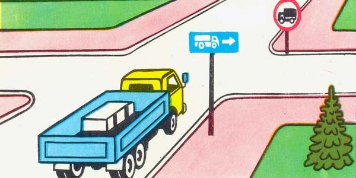
6. Նշաններից ո՞րն է արգելում կայանումն ամսվա զույգ օրերին:
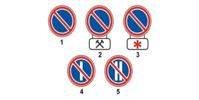
7. Ինչպե՞ս պետք է վարվի վարորդը տվյալ իրավիճակում:
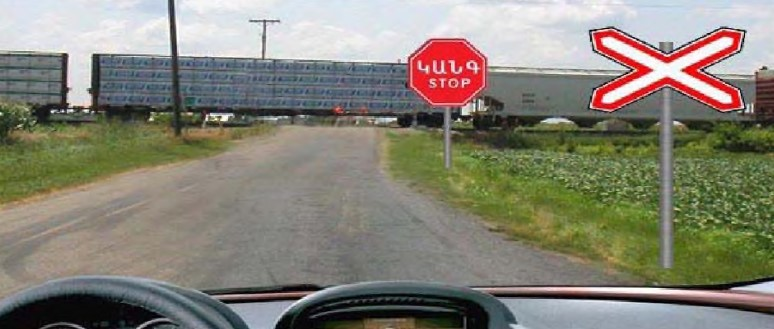
8. Ո՞ր պատասխանում է ճիշտ նշված անցման հերթականությունը:
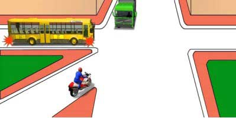
9. Որտե՞ղ պետք է կանգ առնի վարորդը տվյալ իրավիճակում:
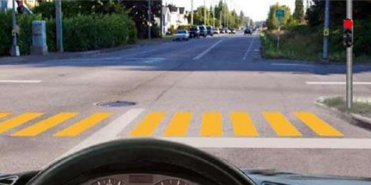
10. Ազդանշան տալը երթևեկության մյուս մասնակիցների նկատմամբ առավելություն
11. Այս իրադրությունում կանգառ կատարել ուղևոր նստեցնելու նպատակով
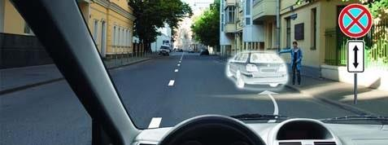
12. Տրանսպորտային միջոցները խաչմերուկը կանցնեն հետևյալ հերթականությամբ:
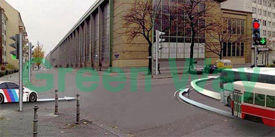
13. Այս նշանի առկայության դեպքում ի՞նչ առավելագույն արագությամբ երթևեկելու իրավունք ունեն միջքաղաքային ավտոբուսների վարորդները:
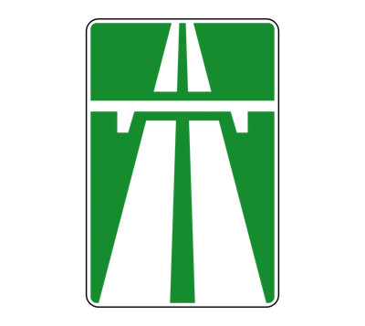
14. Որտե՞ղ է թույլատրվում հատել երկաթուղային գծերը:
15. Այս գոտուց ո՞ր ուղղությամբ կարող է թեթև մարդատարի վարորդը շարունակել երթևեկությունը
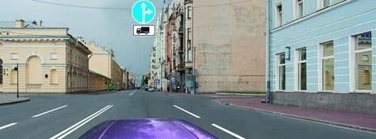
16. Այս իրավիճակում խաչմերուկն անցնելիս զիջել ճանապարհը
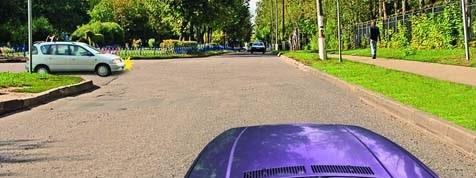
17. Վարորդներից ո՞վ է խախտել կայանման կանոնները
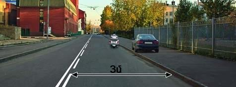
18. Խաչմերուկին մոտենալիս վարորդը տրանսպորտային միջոցը պետք է վարի այնպիսի արագությամբ, որ
19. Այս իրավիճակում ո՞ր տրամվայի վարորդին պետք է զիջել ճանապարհը
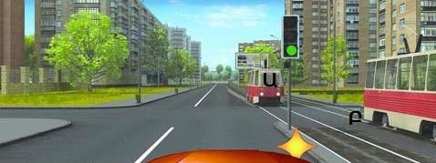